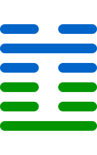

第三卦
屯卦

卦辞
元亨，利贞。勿用有攸往，利建侯。
屯卦象征着艰难的开始，如同草木初生时遇到阻碍。卦辞意为：至为亨通，有利于坚守正道。不要急于前往，有利于建立侯业。屯卦告诉我们，在事业开始时会遇到困难，需要耐心等待时机，先打好基础。
彖传
屯，刚柔始交而难生。动乎险中，大亨贞。雷雨之动满盈，天造草昧，宜建侯而不宁。
彖传说：屯卦，刚柔开始相交而困难产生。在危险中行动，大为亨通而正固。雷雨行动充满天地，天地创造草木蒙昧，适宜建立侯业而不安宁。屯卦象征着创始时期的艰难，需要勇敢面对困难，建立秩序。
象传
云雷，屯。君子以经纶。
象传说：云雷组合，就是屯卦。君子应当效法这种精神，经营治理国家。云雷象征着天地的力量在孕育中，君子应当在这种时期努力经营，建立秩序。
爻辞
初九：磐桓，利居贞，利建侯
盘桓不前，有利于安居守正，有利于建立侯业。
初九爻位于最下方，虽有阳刚之性，但处于困境中。应当像磐石一样稳固，安居守正，不要急于行动，先建立基础。
六二：屯如邅如，乘马班如。匪寇婚媾，女子贞不字，十年乃字
艰难徘徊，乘马进退不定。不是盗寇而是婚配，女子守正不嫁，十年才嫁。
六二爻得中得正，但处于困境中。虽然艰难，但保持贞正，等待时机。女子十年才嫁，表示需要长时间的等待。
六三：即鹿无虞，惟入于林中，君子几不如舍，往吝
追鹿没有向导，进入林中，君子见机不如舍弃，前往会有困难。
六三爻失位，象征盲目行动。追鹿没有向导，容易迷失在林中。君子应当见机行事，知道何时该放弃，否则会有损失。
六四：乘马班如，求婚媾，往吉，无不利
乘马进退不定，求取婚配，前往吉祥，没有不利的。
六四爻接近君位，虽然有困难但最终有利。求婚成功，象征努力会有回报，前往行动是吉祥的。
九五：屯其膏，小贞吉，大贞凶
囤积膏泽，小守正吉祥，大守正凶险。
九五爻居中尊位，但处于困境中。囤积资源可以自保，但小规模的坚守正道吉祥，大规模的行动则凶险。
上六：乘马班如，泣血涟如
乘马进退不定，哭泣泪流如血。
上六爻位于极点，困境达到顶峰。进退两难，痛苦不堪，需要耐心等待转机。